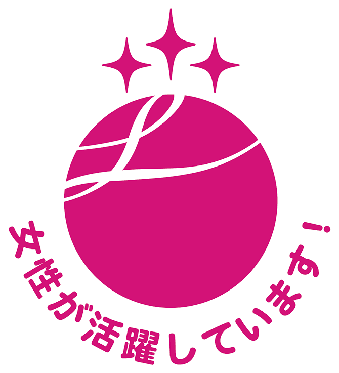

女性活躍推進
LIXIL統合後1年に満たない2012年3月、LIXILの女性管理職は22名で、管理職の女性比率はわずか0.9％でした。多様性により創出されるエネルギーと創造性を経営に活かすためには、従業員の約20％以上を占める女性の活躍が不可欠であると考え、2013年より、女性の積極的な管理職登用やワーク・ライフ・フレキシビリティの推進等を行いました。2018年からは「LIXILダイバーシティ＆インクルージョン宣言 -Japan2.0-」で掲げた、パイプライン形成、定期採用、育成に関するアクションに注力しています。
その結果、2020年3月時点で女性管理職は171名、管理職の女性比率は5.7％となりました。
また、LIXILは2020年3月に経済産業省と東京証券取引所が共同で女性活躍推進に優れた企業を選定する「なでしこ銘柄」に選ばれ、3年連続、5回目の選定となりました。
女性活躍推進の詳細情報（グローバルサイト）>
ライフイベントを経てもキャリアを形成するための「ままっぷ」
LIXILでは、毎年200名ほどが出産休暇を経て、育児休業を取得しています。この女性たちが、育児休業をマイナスにとらえるのはなく、出産もライフイベントの一つとして前向きに考え、継続的にキャリアを考えるワーキングマザー向けのサポートツール「ままっぷ」を運用しています。これは、妊娠が分かった時点から上司と面談を行い、復職後のキャリアに関する計画を自ら立てていくものです。
出産予定日を入れると、いつ、何をすべきかが分かるロードマップになっており、上司と共有しながらキャリアを考えていくことができます。特に面談で確認すべきことなど、当事者からは言い出しにくいこと、上司から聞きにくいことがフォーマット化されることで、コミュニケーションが円滑になります。育児休業中もコミュニケーションを取ることは、復職後の受け入れ準備ばかりではなく、育児休業取得中の当事者のモチベーション維持にもつながっています。多様性を活かすには、相互理解が不可欠であり、上司も専用のeラーニングで対象者へのアドバイスやコミュニケーションに必要な知識も学んでいます。

このような具体的な取り組みや人材育成などが評価され、2017年6月、「第1回カタリストジャパン特別賞」を受賞しています。
女性活躍のさらなる促進
2016年4月「女性の職業生活における活躍の推進に関する法律（女性活躍推進法）」の施行に伴い、株式会社LIXILでは女性活躍を加速し定着させるために、2016年4月1日から2019年3月31日の期間で、働き方を含む環境の整備を促進する「一般事業主行動計画」を策定し取り組んできました。2017年には、厚生労働大臣より女性の活躍推進が認められた企業に与えられる「えるぼし」の最高位認定を取得しています。
女性従業員のさらなる活躍を目指して、特に子育てに関わる女性従業員がパフォーマンスを十分に発揮できるよう、「一般事業主行動計画」を2019年4月に策定し以下の通り表明しています。
目標と取組内容・実施時期
目標： 子育てに関わる女性従業員がパフォーマンスを十分に発揮できるよう、阻害要因の一つである「アンコンシャス･バイアス(無意識の偏見)｣を低減させるために、マネージャーに対して研修を実施します。また受講率は70％以上とします。
計画期間：2019年4月1日～2021年3月31日
<取組内容・実施時期>
①2019年4月～2020年3月
関連部門の関係者と研修の詳細を検討し、決定する。
②2020年4月～2021年3月
マネージャーに対して研修を実施する。
様々な取り組みによりビジネス面での成果も現れています。今後も継続して女性従業員の能力を引き出し、多様性が生み出す力を活かすことで、LIXILの成長を図っていきます。